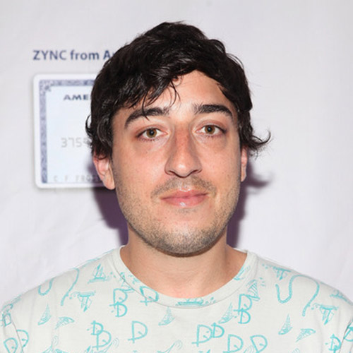
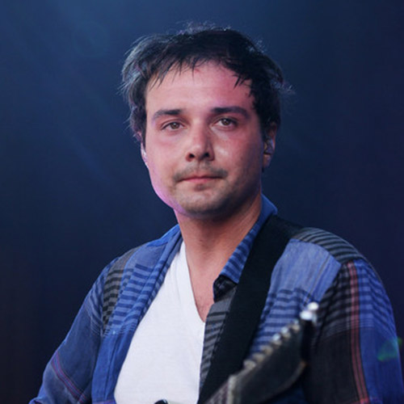
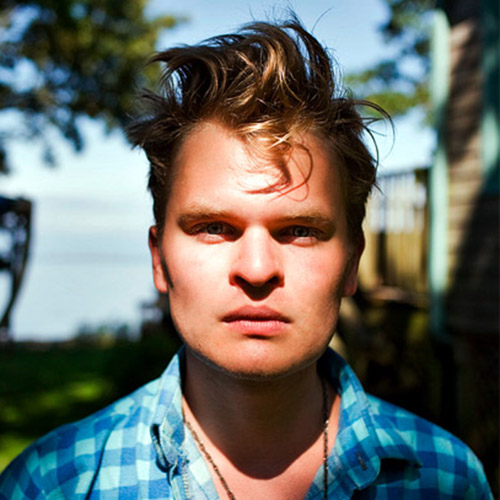
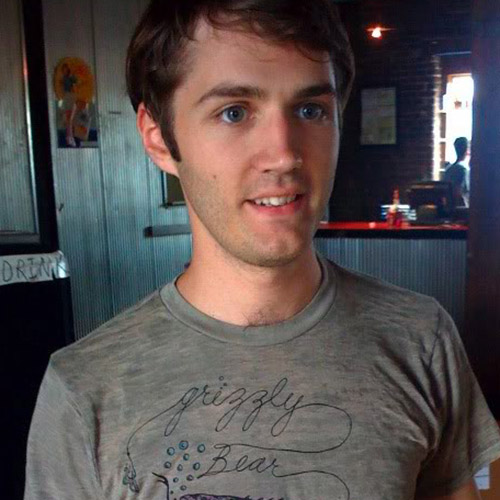

Grizzly Bear is an American indie rock band from Brooklyn, New York, formed in 2002. The band consists of Edward Droste, Daniel Rossen, Chris Taylor and Christopher Bear. The band employs traditional and electronic instruments. Their sound has been categorized as psychedelic pop, rock, and experimental, and is dominated by the use of vocal harmonies. The band is one of the few non-electronic artists signed to Warp Records.
- 
- Edward Droste
- Date of birth: October 22,1978
- Skills: vocals, guitar, keyboards, autoharp
- 
- Daniel Rossen
- Date of birth: August 5, 1982
- Skills: singer, guitar, piano, keyboards, banjo, cello
- 
- Christopher Taylor
- Date of birth: August 29, 1981
- Skills: bass, woodwinds, electronics, vocals
- 
- Christopher Bear
- Date of birth: July 19, 1982
- Skills: drums, vocals, xylophone, lap steel, glockenspiel, MAX/MSP